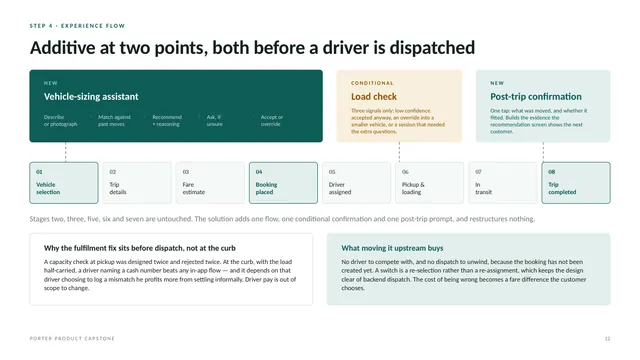
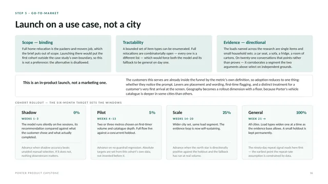

Airtribe capstone · Logistics marketplace
Building first-time confidence at Porter
An AI vehicle-sizing assistant that helps first-time customers choose the right vehicle, so more of them complete a first trip.

Summary
- Problem
- 59% of first-time customers who reach vehicle selection never complete a trip.
- What I found
- Vehicle-fit uncertainty shows up in just 2% of Porter reviews, yet all three research sources named it, and it gates the whole funnel.
- The call
- Built a vehicle-sizing assistant (RICE 0.90) over two options that scored 2.40, because neither answered the barrier directly.
- Value
- ₹42.8 Cr a year if completion reaches the 58% target; ₹28.6–57.1 Cr across the key assumption.
The brief
Porter serves about 30 lakh intra-city customers a month. About 10 lakh are individual customers, the segment in scope, and 41% of them complete a first trip once they reach the vehicle-selection screen. The brief set the target at 58% within six months.
Two lines in the brief shaped every decision. The funnel opens at vehicle selection, so acquisition is not the problem. And success is a completed trip, not a placed booking, so a fix that pushes more badly sized bookings into fulfilment would move the wrong number and hurt the customer.
From vehicle selection to a completed trip within seven days, for first-time individual customers. Both numbers come from the brief.
Research: two kinds of evidence, kept apart
I kept collected evidence and elicited evidence apart, so each could cover what the other can't see.
| Method | Sample | Why it matters |
|---|---|---|
| Review mining | 427 Google Play reviews: Porter 220, Rapido 180, Uber 27 (India-filtered) | Unprompted. Nobody was asked about vehicle size, so nobody was led toward it. Rapido and Uber separate goods-transport barriers from the quirks of one app. |
| Survey | 17 responses: a product-management WhatsApp community (7) and a SurveySwap panel (10) | Fourteen questions, ordered so unaided recall of pre-booking doubts came before any question named a barrier. |
| Interviews | 4 WhatsApp conversations with the same opening prompt | One was logged and excluded from every finding because the reply wasn't first-hand. |
| Competitor research | 6 operators across 3 markets | Booking flows and sizing guidance read directly, not inferred from complaints. |
The loudest complaint isn't the real barrier
| Barrier | Share |
|---|---|
| Support unresponsive | 20% |
| Price opacity | 10% |
| Trust in an unfamiliar app | 9% |
| Tracking visibility | 6% |
| Damage handling | 5% |
| Vehicle-fit uncertainty | 2% |
| Barrier | Sources |
|---|---|
| Vehicle-fit uncertainty | 3 of 3 |
| Price opacity | 3 of 3 |
| Loading responsibility | 3 of 3 |
| Trust in an unfamiliar app | 2 of 3 |
| Damage handling | 2 of 3 |
| Support unresponsive | 1 of 3 |
A customer who couldn't size a load and left never wrote a review. The review corpus is blind to the barrier that stops people before they transact, so vehicle fit is the lowest-volume tag of any barrier all three sources named. The gap between the two rankings is the finding, not a weakness in the data.
Three types of first-time customer
The Cautious First-Timer
Wants to try Porter and arrives with more open questions than the booking flow answers. The closest of the three to the conversion metric.
“Which vehicle size I needed; whether my stuff would actually fit; what the total cost would be.”
The Abandoner
Opens the app, starts a booking and walks away before the trip happens. This is mid-funnel abandonment, the exact failure the brief measures.
“Eventually I ended up not using the service.”
The Offline Loyalist
Has bulky items to move, knows the apps exist, and calls a person instead, every time. The competition here is a phone call, not another app.
“If I had more information about the reliability and safety of the app-based services, I might have considered trying one.”
A second survey wave added six responses. Every one fitted an existing type without forcing a fourth.
Nobody answers “which vehicle?” inside the flow
| Operator | Market | What the customer gets | Sizing help |
|---|---|---|---|
| Porter | India | A vehicle grid with weight limits and example loads; the catalogue varies by city | Nothing in the flow |
| Lalamove | Asia, Europe | Four categories described by example items, then manual selection | A blog guide, off the flow |
| U-Haul | United States | A room-by-room table matching home size to truck size, self-assessment factors and a supplies calculator | A help article, off the flow |
| MOVER, Borzo, Uncle Delivery, BlackBuck | India | Positioned by use case; any suggestion is by delivery purpose, not by what's moved | Nothing |
| The offline operator | India | A person who asks what you're moving and sizes the job before you commit | In the conversation itself |
A company U-Haul's size doesn't build a room-by-room sizing guide unless customers keep getting it wrong. But it's a help article, not a step in the flow, so the work still sits with the customer at the moment they're least able to do it. The only competitor that does the translation for the customer is the one without an app.
Why vehicle fit, out of three converging barriers
Three barriers were named by every source. Price opacity is real, but it looks the same at every competitor and its fix crosses into the pricing engine, which the brief puts out of scope. Loading responsibility is genuinely unaddressed and stays on the list as a named gap. Vehicle fit won on four counts, in priority order:
- It gates everything. Vehicle selection is mandatory, so every customer in the 41% passes through it. Every other barrier depends on this step succeeding first.
- It fails in both places. It can kill the booking or kill the trip, which is exactly what the success definition covers.
- It belongs to this category. It's absent from both ride-hailing corpora, because neither Rapido nor Uber asks a customer to size a load.
- Customers named the fix. Unprompted, in a question that never mentioned vehicles, one respondent asked for “scanning my things and telling me approx which size vehicle would I need.”
Sizing the opportunity
- 30 lakhPorter intra-city customers a month (total market)
- 10 lakhindividual customers a month (serviceable)
- 1.5 lakhfirst-timers reaching vehicle selection a month (obtainable)
- ₹42.8 Crnet expected value a year at the 58% target
Only the obtainable layer is claimed. The ₹42.8 Cr is net expected value across 18 lakh first-time customers a year, on a 24-month lifetime-value horizon. The softest input is the first-timer share: at 10% the value is ₹28.6 Cr, at 20% it's ₹57.1 Cr. The case for building holds across the range; only its size moves.
Per customer who reaches vehicle selection, expected value rises from ₹324 to ₹562 (+73%), and completed first trips go from about 61,500 to 87,000 a month.
The brief supplies 41%, 58% and the customer base. Volumes, order value and repeat rate are my stated assumptions, marked as such throughout the pack.
Prioritisation: ten solutions, one call
| Solution | Reach / mo | Impact | Conf. | Effort | Score |
|---|---|---|---|---|---|
| Vehicle-sizing assistant: describe or photograph the load, get a vehicle with reasons Built | 1.50 L | 3 | 80% | 4 | 0.90 |
| Guided item configurator: rules-based lookup, no model Runner-up | 1.50 L | 2 | 80% | 1 | 2.40 |
| Capacity confirmation before dispatch | 0.82 L | 2 | 80% | 2 | 0.66 |
| Itemised upfront fare breakdown | 1.50 L | 2 | 80% | 1 | 2.40 |
| Pre-booking orientation on packing and lifting | 1.50 L | 2 | 50% | 1 | 1.50 |
| First-time orientation content at the entry point | 1.50 L | 1 | 50% | 1 | 0.75 |
| Pre-booking route and driver transparency | 1.50 L | 1 | 50% | 2 | 0.38 |
| Save and resume on a mid-flow exit | 0.68 L | 2 | 50% | 2 | 0.34 |
| Fare lock with an in-app dispute flag | 0.82 L | 1 | 50% | 2 | 0.21 |
| Proactive trip-status updates | 0.82 L | 0.5 | 25% | 2 | 0.05 |
Reach is customers a month, in lakh, at the moment the barrier strikes: 1.50 lakh first-timers reach vehicle selection, 0.82 lakh once a booking exists, 0.68 lakh on mid-flow exits. Effort is a person-week band of 1, 2 or 4, applied the same way to every row.
Two solutions tie at the top and neither answers the primary barrier as directly. I built the vehicle-sizing assistant: the only option with maximum impact, the only one with a trust layer alongside the recommendation, and the one a customer asked for unprompted. The configurator came second, and I argued it in the deck rather than building it. A framework ranks; it doesn't decide.
Both options buy certainty by adding a step to an on-demand flow, so time from vehicle selection to booking is measured per cohort. The trade-off is measured, not just named.
The solution
The assistant adds to Porter's flow at two points, both before a driver is dispatched. Trip details, fare estimate, pickup and transit stay untouched.
- Vehicle-sizing assistant. One input bar for text and photos. It matches the load against past moves and shows the vehicle, the reasoning and comparable moves on one screen. If the description is too vague, it asks three questions instead of guessing. Accepting pre-fills the vehicle, and the full grid is always one tap away.
- Load check. Fires only on three signals: a low-confidence recommendation accepted anyway, an override into a smaller vehicle, or a session that needed the extra questions.
- Post-trip confirmation. One tap on what was moved and whether it fitted. It builds the evidence the next customer sees.

Why the check sits before dispatch, not at the curb
A capacity check at pickup was designed twice and rejected twice. At the curb, with the load half-carried, a driver naming a cash number beats any in-app flow. Before dispatch there's no driver to compete with, a switch is a re-selection rather than a re-assignment, and the cost of being wrong is a fare difference the customer chooses.
Design principles
- Opt-in, not a gate. The existing grid stays the default, so repeat and business customers aren't slowed down. The cost is that a customer who misses the prompt gets no help, so placement and wording are tested from the first cohort.
- Reasoning is unavoidable. The vehicle, the reason and comparable moves sit on one screen. Nobody taps “why” on a recommendation they have no reason to doubt yet.
- Low confidence asks. A confident wrong answer would manufacture the false certainty this work exists to remove.
- Override is never blocked. A recommendation that can't be dismissed reads as a decision made on the customer's behalf.
Roadmap and rollout
| Release | Ships | Why here |
|---|---|---|
| R0 · Instrumentation (pre-launch) | Post-trip confirmation on every completed first trip; no assistant yet | The recommendation screen shows comparable past moves, and that evidence doesn't exist today. |
| R1 · The assistant (cohorts 0–3) | Photo and text input, low-confidence questions, the load check before dispatch | The fallback is the expensive shared part and gets built either way, so photo and text ship together. |
| R2 · Dimensional accuracy (after general availability) | Longest-side gating where load-bay dimensions are published; a live per-city catalogue | Answers the two failure modes most likely to produce a confidently wrong answer. |
| R3 · Segment expansion (triggered, not dated) | Load types beyond single items and small household sets, one at a time | Accuracy tracks how dense the evidence is, so scope widens where the loop has already run. |
The launch is in-product and scoped to a use case, not a city: single items and small household sets. Full home relocation is the packers-and-movers job the brief puts out of scope, and a bounded set of item types can be enumerated where full relocations can't.

- Shadow, 0% (weeks 1–3). The model runs silently on live sessions. Advance when its accuracy beats unaided manual selection.
- Pilot, 5% (weeks 4–13). Two or three metros, against a concurrent holdout. Advance on no guardrail regression.
- Scale, 25% (weeks 14–20). A wider city set, same load segment. Advance when the North Star is positive against the holdout.
- General, 100% (week 21 on). All cities, with a small permanent holdout.
Measurement: one North Star, five guardrails
North Star: first-trip completion rate, from vehicle selection to a completed trip within seven days, for first-time individual customers. It's reported beside a volume companion (61,500 to 87,000 completed first trips a month) so the rate can't improve by shrinking its own denominator.
Leading, booking side
- Assistant engagement
- Assistant completion
- Recommendation acceptance
- Override direction
- Load-check switch rate
- Selection to booking
- Time to booking, per cohort
Lagging, fulfilment side
- Booking to completed trip
- Recommendation accuracy
- Override correctness
- Vehicle change at pickup
- Fare gap at completion
Guardrails, each gated against a concurrent holdout: cancellations, cancel and rebook, fare disputes, completed but not returning, and on-demand speed.
Two loops turn on the same event, a trip that completes correctly. Each completed trip becomes evidence for the next customer's recommendation, and each correct first trip gives the customer their own sizing judgement, so they graduate out of needing the assistant. That's why assistant usage is read at cohort level, never as daily active use.
Risks and trade-offs
The register lists seventeen risks. Three decide whether this works.
- Described wrongly, sized confidently. An inaccurate description produces a confident recommendation that passes every check and fails at the curb. There's no mitigation inside this version, so it's measured: the dispatch record is a floor, and the customer's own post-trip answer catches what a driver settling in cash never logs.
- Weight is the easy half. Five vehicle categories sit within a few hundred kilograms of each other, and load-bay dimensions are published for only some. Naming a large single item makes the oversized question mandatory, and the recommendation gates on longest side where a dimension exists and rounds up where it doesn't.
- A correct answer can feel like a penalty. The right vehicle is often bigger and costlier, and pricing is out of scope. Fare disputes is the guardrail most likely to move, so the copy names what the cheaper option actually costs.
Kill criteria were set in advance: accuracy below the manual baseline halts the rollout, and a material regression in fare disputes rolls it back a cohort.
What the design deliberately doesn't optimise for: reach (it's opt-in), recovery at the curb, the cheapest trip, breadth across barriers, and revenue per trip, since some current revenue comes from mis-sizing.
Limits of this work
- The primary research is small: 17 survey responses and 4 interviews, one of them excluded. Three survey respondents were outside India and are used only to test whether the barrier belongs to the category.
- Review tags are a floor, not a ceiling. Only 59 of the 220 Porter reviews had full text, and snippet-only reviews with no confident match stayed untagged rather than being forced into a tag.
- Volumes, order value and repeat rate in the sizing are assumptions, marked as such throughout the pack.
- The prototype matches on deterministic rules over the typed description, not a live model. Its fares, reviews and addresses are illustrative.
- Loading responsibility, the third converging barrier, is a named gap this version doesn't address.